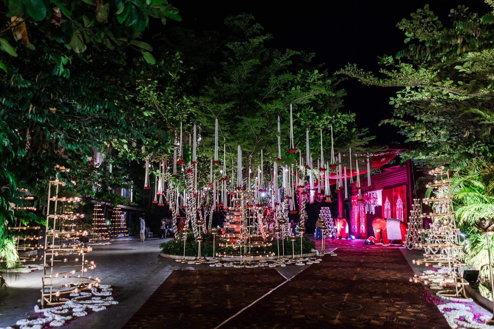

The first thing a guest feels, the last thing they forget.
We design every set in the wedding as one continuous world — a single palette that travels from the entrance, through the mandap, to the table you sit at for dinner.
Our own crews build and rig on site, often overnight, with flowers sourced close to the venue so they open the morning of the event and never arrive a day late off a truck.
From sketch to set.
One colour story for the whole wedding, drawn from your families, the venue and the season.
Entrances, mandaps and reception stages designed, built and rigged by our own team.
Sourced near the venue and arranged on site, at their peak, never trucked across the country.
Lit for the eye and the lens — golden-hour warmth held steady all evening long.
Linen, signage, seating and the small details guests photograph without being asked.
We raise it and we take it down, and hand the venue back exactly as we found it.
From sketch to set.
The palette
We find the one colour story the whole wedding agrees on, drawn from your families, the venue and the season.
The renders
Scaled drawings and references for every set, so you see the room before a single flower is cut.
The build
Our crew rigs and dresses on site, often overnight, with local florals at their freshest.
The reveal
You walk in to a finished room. We stay through strike, so the morning after is ours, not yours.